Breakthroughs in Building and Solving Models#
How a crystal becomes a tight-binding model and how that model is solved:
Bloch’s theorem and the Brillouin zone, Wallace’s graphene bands,
non-orthogonal bases, the Slater-Koster and k·p frameworks (and the
fermion doubling of k·p models on a lattice), Wannier functions, edges
and surfaces, and the numerical methods (k-point grids, tetrahedron
integration, surface Green’s functions, the kernel polynomial method,
band unfolding) that make large or multi-orbital models tractable. It
traces the ideas behind tbkit.kspace, tbkit.slater_koster,
tbkit.continuum, tbkit.wannier, tbkit.dos,
tbkit.transport, tbkit.kpm and tbkit.moire.
1928 – Bloch’s Theorem and Band Theory#
F. Bloch showed that the eigenstates of a single electron in a perfectly periodic crystal potential \(V(\mathbf{r}) = V(\mathbf{r} + \mathbf{R})\) take the form
turning the Schrodinger equation for an infinite solid into a finite eigenvalue problem \(H(\mathbf{k})u_{n\mathbf{k}} = E_n(\mathbf{k}) u_{n\mathbf{k}}\) at each crystal momentum \(\mathbf{k}\), periodic on the Brillouin zone torus. This single idea – that a crystal’s electronic structure decomposes into bands \(E_n(\mathbf{k})\) – is the foundation every model in tbkit is built on.
Everything below starts from the same two ingredients: a unit cell (the motif, drawn solid and labelled) and the primitive vectors \(\mathbf{a}_i\) that repeat it. The shaded parallelogram is one unit cell; every faded site is a copy of a solid one, translated by some \(\mathbf{R} = n_1\mathbf{a}_1 + n_2\mathbf{a}_2\).
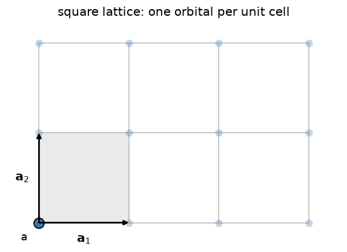
Implementation: tbkit.kspace.KSpace builds \(H(\mathbf{k})\)
directly by Bloch-summing real-space hoppings tagged by which
neighboring unit cell they connect to; get_bands(),
k_path(), and mesh_bands()
diagonalize it at a point, along a path, or over the whole Brillouin
zone. tbkit.kspace.reciprocal_vectors() gives the dual lattice
vectors \(\mathbf{b}_i\) (\(\mathbf{a}_i\cdot\mathbf{b}_j =
2\pi\delta_{ij}\)) that the Brillouin zone is built from.
References: F. Bloch, “Uber die Quantenmechanik der Elektronen in Kristallgittern,” Z. Phys. 52, 555-600 (1929).
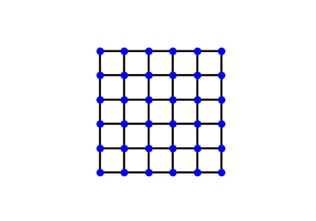
The Square Lattice: Bloch’s Theorem in its Simplest Form
1930/2010 – Brillouin Zones and Standard High-Symmetry Paths#
L. Brillouin (1930) showed where the bands of a nearly free electron open their gaps: on the planes \(|\mathbf{k}| = |\mathbf{k} - \mathbf{G}|\) where a wave is Bragg-reflected by the reciprocal lattice vector \(\mathbf{G}\). The innermost cell those planes enclose, the points closer to \(\Gamma\) than to any other \(\mathbf{G}\), is the first Brillouin zone: the Wigner-Seitz cell of the reciprocal lattice, and the domain of every \(\mathbf{k}\) in Bloch’s theorem. Its centre, face centres and corners are the points of highest symmetry, where bands reach their extrema and become degenerate, so a band structure is drawn along a path through them. For decades each paper chose its own path. W. Setyawan and S. Curtarolo (2010) fixed one standard path per Bravais lattice for high-throughput calculations, the path that many codes and databases now draw.
Implementation: tbkit.kspace.high_symmetry_path() recognizes the
Bravais lattice from lat.prim_vec, whatever the choice of primitive
vectors or the orientation, and returns the standard path and its labels
for k_path() and
plot_bands(): the five 2D lattices, and the
simple cubic, fcc, bcc, simple tetragonal and hexagonal lattices in 3D.
tbkit.kspace.cubic_path() builds any other path of a cubic crystal
from the tabulated points, in units of \(2\pi/a\) along the cubic
axes.
References: L. Brillouin, “Les électrons libres dans les métaux et le rôle des réflexions de Bragg,” J. Phys. Radium 1, 377-400 (1930); W. Setyawan and S. Curtarolo, “High-throughput electronic band structure calculations: Challenges and tools,” Comput. Mater. Sci. 49, 299-312 (2010).
Example: examples/tight_binding/plot_brillouin_zones_and_high_symmetry_paths.py
checks that every point of the paths of the five 2D lattices lies on the
boundary of the zone, that two bases and a rotation of the triangular
lattice give the same \(M\) and \(K\), and that the s band of
the fcc and bcc lattices takes its closed-form values at every labelled
point. cubic_path rebuilds the fcc path from its table and follows
the cube diagonal to \((1,1,1)\,2\pi/a\), an image of
\(\Gamma\).
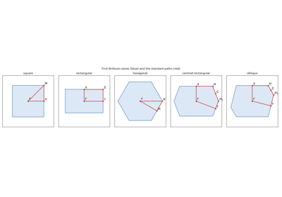
Brillouin Zones and Standard High-Symmetry Paths
1947 – Wallace’s Tight-Binding Prediction of Graphene#
Thirty-nine years before it had a name and fifty-seven years before it was isolated, graphene’s electronic structure was already known: P. R. Wallace worked out the tight-binding band structure of a single honeycomb sheet of carbon (as a stepping stone to understanding bulk graphite) and found something no one had seen in a solid before. The two bands touch at the corners of the hexagonal Brillouin zone, and expanding the dispersion around one such point \(\mathbf{K}\) gives, to leading order,
a dispersion that is linear in momentum rather than the usual quadratic \(\hbar^2q^2/2m^*\). Electrons near \(\mathbf{K}\) therefore behave as massless, relativistic (Dirac) particles with an effective speed of light \(v_F = 3ta/2\), decades before “Dirac fermions in condensed matter” became a field in its own right.
The two bands are the two orbitals of the honeycomb unit cell – one on
each of the interpenetrating triangular sublattices 'a' and 'b':
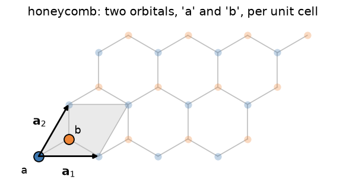
Implementation: no new code – this is the same honeycomb
tbkit.kspace.KSpace Hamiltonian used throughout this chronology,
evaluated at momenta offset from \(\mathbf{K}\) by a small
\(\mathbf{q}\).
References: P. R. Wallace, “The Band Theory of Graphite,” Phys. Rev. 71, 622-634 (1947).

Graphene: Real-Space Flake and Reciprocal-Space Bands
1950 – Löwdin Orthogonalization and Non-Orthogonal Tight Binding#
Atomic orbitals on neighbouring atoms overlap, so in an LCAO basis the Schrödinger equation is the generalized eigenproblem \(H\mathbf{c} = ES\mathbf{c}\), with the overlap matrix \(S\). P.-O. Löwdin (1950) removed \(S\) by the symmetric orthogonalization \(|\psi\rangle = S^{-1/2}|\phi\rangle\): of all orthonormal sets, the closest to the atomic orbitals, and one that treats every orbital alike, so it keeps the symmetry of the crystal. In this basis the Hamiltonian is \(S^{-1/2}HS^{-1/2}\), with the same bands. It is the justification of orthogonal tight-binding models, with a caveat: the Löwdin orbitals have tails on the neighbouring atoms, so the hoppings between them reach further than the bonds. A model with a few hoppings truncates that series. The same orthogonalization turns projected trial orbitals into the starting gauge of maximally localized Wannier functions (see the 1997/2008 entry).
Implementation: tbkit.kspace.KSpace.set_overlap() sets the
overlaps in the format of set_hopping(), after
which every band is the solution of \(H(\mathbf{k})v =
ES(\mathbf{k})v\); get_overlap() returns
\(S(\mathbf{k})\), and the topological tools use the
Löwdin-orthonormalized states \(S^{1/2}v\).
References: P.-O. Löwdin, “On the Non-Orthogonality Problem Connected with the Use of Atomic Wave Functions in the Theory of Molecules and Crystals,” J. Chem. Phys. 18, 365-375 (1950).
Example: examples/orbitals/plot_lowdin_orthogonalization.py solves
a chain with overlap \(s = 0.2\) against the closed form
\((\epsilon + 2t\cos ka)/(1 + 2s\cos ka)\), checks that
\(S^{-1/2}HS^{-1/2}\) has the same spectrum, that the hoppings between
Löwdin orbitals fall by the factor \(x = (1 - \sqrt{1 - 4s^2})/2s\)
per neighbour, as does the error of the truncated model, and that on a
ring Löwdin’s orbitals move half as far as Gram-Schmidt’s, all by the
same amount.
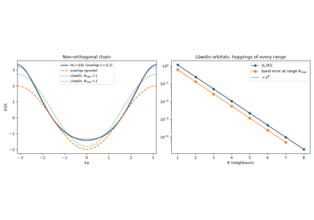
Löwdin Orthogonalization and Non-Orthogonal Tight Binding
1954 – The Slater-Koster Tight-Binding Framework#
J. Slater and G. Koster showed how to build realistic band structures from a minimal empirical basis: a linear combination of atomic orbitals (LCAO), with hopping matrix elements between neighboring orbitals as fitting parameters rather than computed from first principles. This traded first-principles rigor for tractability and physical transparency, and remains the standard language for model-building in condensed matter theory – it is, in effect, the specification tbkit itself implements: define a unit cell of orbitals, define hoppings between them, and let the code Bloch-sum or diagonalize the result.
Implementation: tbkit.lattice.Lattice (the unit cell and its
translations), tbkit.system.System (finite, real-space
Hamiltonians) and tbkit.kspace.KSpace (periodic, reciprocal-space
Hamiltonians) are exactly this LCAO philosophy, general enough to cover
every other model in this chronology. The Slater-Koster table itself is
tbkit.slater_koster.sk_block() (s, p and d orbitals, generated from
the rotation of the bond frame); tbkit.orbital.OrbitalSystem
(real space, several orbitals and spin per site) and
tbkit.slater_koster.sk_kspace() (Bloch bands) build Hamiltonians
from bond integrals, with the overlap matrix of a non-orthogonal basis
(tbkit.kspace.KSpace.set_overlap()) when it is given.
Example: examples/orbitals/plot_slater_koster.py builds graphene’s
\(sp^3\) bands, confirms that \(p_z\) decouples into Wallace’s
\(\pi\) bands with \(t = V_{pp\pi}\), that the overlap turns them
into \((\epsilon_p\pm t|f|)/(1\pm s|f|)\), and that the real-space
flake and the Bloch model agree.
References: J. C. Slater and G. F. Koster, “Simplified LCAO Method for the Periodic Potential Problem,” Phys. Rev. 94, 1498-1524 (1954).
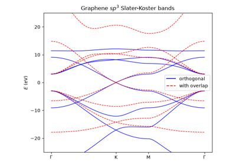
The Slater-Koster Method: Graphene’s sigma and pi Bands
1955/1957 – The k·p Method and Effective-Mass Theory#
Near a band edge, the Bloch functions at \(\mathbf{k}\) can be expanded in those at the band extremum, and the crystal Hamiltonian becomes a small matrix polynomial in \(\mathbf{k}\): the k·p Hamiltonian. J. M. Luttinger and W. Kohn (1955) turned this into the effective-mass theory of electrons and holes in slowly varying fields, where \(\mathbf{k}\) is replaced by \(-i\nabla\) acting on an envelope function. E. O. Kane (1957) used it to explain the band structure of InSb from a handful of parameters. Since then k·p models (the Kane and Luttinger models, and B. A. Bernevig, T. L. Hughes and S.-C. Zhang’s (2006) model of the band inversion in HgTe quantum wells) describe semiconductor heterostructures, nanowires and topological insulators from a few numbers fitted to experiment or to first-principles bands.
A computer solves a k·p model by discretizing the envelope functions on a grid. \(k_x = -i\partial_x\) becomes a finite difference, which turns the continuum Hamiltonian into a Tight-Binding model on a square or cubic lattice: \(k_x^2 \to (2 - 2\cos k_xa)/a^2\), \(k_x \to \sin(k_xa)/a\). It agrees with the continuum model to \(O(a^2)\) near \(\mathbf{k}=0\), and its Brillouin zone is compact, which makes topological invariants integers.
Implementation: tbkit.continuum.discretize() takes a sympy
expression or a string in k_x, k_y, k_z (scalar, or a matrix built
with sigma_x, kron, …) and returns a
KSpace on a chain, square or cubic grid. Its free
symbols become parameters, set by
get_ham(k, M=...) or set_params().
discretize_symbolic() shows the hopping matrices
in terms of the grid spacing \(a\). The scheme (half-step differences,
step \(a\) for even powers and \(2a\) for odd ones) is that of
Kwant’s kwant.continuum. tbkit.bridges.finite_system() turns
the lattice model into a real-space System.
References: J. M. Luttinger and W. Kohn, “Motion of Electrons and Holes in Perturbed Periodic Fields,” Phys. Rev. 97, 869-883 (1955); E. O. Kane, “Band structure of indium antimonide,” J. Phys. Chem. Solids 1, 249-261 (1957); B. A. Bernevig, T. L. Hughes, and S.-C. Zhang, “Quantum Spin Hall Effect and Topological Phase Transition in HgTe Quantum Wells,” Science 314, 1757-1761 (2006); C. W. Groth, M. Wimmer, A. R. Akhmerov, and X. Waintal, “Kwant: a software package for quantum transport,” New J. Phys. 16, 063065 (2014).
Example: examples/models/plot_kp_theory_on_a_lattice.py derives the
nearest-neighbour chain of the effective mass symbolically. It then
discretizes the BHZ model, checks that its bands converge to the
continuum ones as \(a^2\), that the lattice model has Chern number
\(|C| = 1\) exactly when the bands are inverted (\(M/B > 0\)),
and that a finite flake cut from it has edge states in the gap only then.
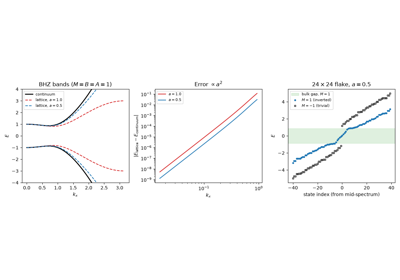
k·p Theory on a Lattice: from a Continuum Hamiltonian to Tight-Binding
1971/1972 – The Tetrahedron Method for the Density of States#
The density of states and every Fermi-surface property are integrals over the Brillouin zone of functions that are singular: a delta function \(\delta(E - E_n(\mathbf{k}))\), or a step at the Fermi level. Sampling the bands on a mesh and broadening each level smears the features that matter most – the \(\sqrt{E}\) band edges and the van Hove singularities at the saddle points of \(E_n(\mathbf{k})\) – by a width chosen by hand. O. Jepsen and O. K. Andersen (1971) and, independently, G. Lehmann and M. Taut (1972) split the zone into tetrahedra with the mesh points at their corners, interpolated each band linearly inside every tetrahedron, and integrated that interpolation exactly: within a tetrahedron the density of states is a polynomial in \(E\) known in closed form. Nothing has to be broadened, and the error falls with the mesh. P. E. Blochl, Jepsen and Andersen (1994) gave the formulas in their standard form (with a correction for the curvature of the bands), and the method has been the default for densities of states and Fermi-level integrals in band-structure codes ever since.
Implementation: tbkit.dos.tetrahedron_dos() (the linear method,
on segments, triangles or tetrahedra of a 1D, 2D or 3D mesh) and
plot_dos() with kernel='tetrahedron'. The
same decomposition of the mesh gives the constant-energy contours of
fermi_surface().
References: O. Jepsen and O. K. Andersen, “The electronic structure of h.c.p. ytterbium,” Solid State Commun. 9, 1763-1767 (1971); G. Lehmann and M. Taut, “On the numerical calculation of the density of states and related properties,” Phys. Status Solidi B 54, 469-477 (1972); P. E. Blochl, O. Jepsen, and O. K. Andersen, “Improved tetrahedron method for Brillouin-zone integrations,” Phys. Rev. B 49, 16223-16233 (1994).
Example: examples/tight_binding/plot_tetrahedron_method.py
reproduces the logarithmic van Hove singularity of the square lattice
(within 0.3% of the exact elliptic-integral result on an 80 x 80 mesh,
where a Gaussian broadening is off by 6%), and in 3D puts no states
below the band bottom and converges ten times faster than the Gaussian.
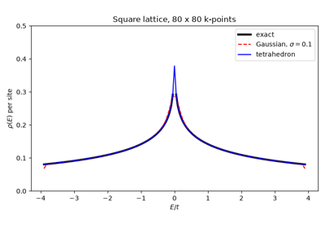
The Tetrahedron Method for the Density of States
1976 – Monkhorst-Pack k-Point Grids#
Total energies, densities and forces are averages over the Brillouin zone. D. J. Chadi and M. L. Cohen (1973), after A. Baldereschi’s mean-value point (1973), chose sets of special points that average the low Fourier components of a periodic function exactly. H. J. Monkhorst and J. D. Pack (1976) gave the general recipe: a uniform grid of \(q\) points along each reciprocal vector, \(u_r = (2r - q - 1)/2q\). Such a grid integrates exactly every Fourier component \(e^{i\mathbf{k}\cdot\mathbf{R}}\) with every \(|R_i| < q\), so for an insulator, whose band energies and projectors are analytic in \(\mathbf{k}\), the error falls exponentially with \(q\). For even \(q\) the grid avoids \(\Gamma\) and the other high-symmetry points, and fewer of its points are independent under the point group. Monkhorst-Pack grids are still the default k-point sampling of band-structure codes. In a metal the occupations jump at the Fermi surface and convergence is only algebraic, which is what smearing and the tetrahedron method (see the 1971/1972 entry) address.
Implementation: tbkit.kspace.KSpace.mesh_grid() and
mesh_bands() with monkhorst_pack=True
build the Monkhorst-Pack grid. Without it they build the
\(\Gamma\)-centred grid \(r/q\) that the Fermi level and the
mesh integrals of tbkit use: the same points for odd \(q\), and
shifted by half a step for even \(q\).
References: H. J. Monkhorst and J. D. Pack, “Special points for Brillouin-zone integrations,” Phys. Rev. B 13, 5188-5192 (1976); D. J. Chadi and M. L. Cohen, “Special Points in the Brillouin Zone,” Phys. Rev. B 8, 5747-5753 (1973); A. Baldereschi, “Mean-Value Point in the Brillouin Zone,” Phys. Rev. B 7, 5212-5215 (1973).
Example: examples/tight_binding/plot_monkhorst_pack_grids.py checks
that a \(q\times q\) grid gets the moments \(\overline{E^2} =
4t^2\) and \(\overline{E^4} = 36t^4\) of the square lattice exactly for
\(q > p\), with the aliased terms of the opposite sign on the shifted
grid. The band energy of gapped graphene converges to \(10^{-14}\) on
a \(24\times24\) grid, that of the half-filled square lattice as
\(q^{-2}\), and the shifted \(4\times4\) grid reduces to the
three special points \((1,1), (1,3), (3,3)\,\pi/4a\), with weights
1/4, 1/2 and 1/4.
1981 – Fermion Doubling: the Nielsen-Ninomiya Theorem#
A band is periodic in \(\mathbf{k}\): a branch that crosses the Fermi level going up must come back down somewhere in the Brillouin zone. H. B. Nielsen and M. Ninomiya (1981) made this a theorem: a local, Hermitian lattice Hamiltonian has as many left- as right-handed chiral fermions, and the chiralities of its Weyl points add up to zero. Lattice gauge theory had met it as fermion doubling: discretizing the Dirac operator by \(k \to \sin(ka)/a\) creates a copy of every fermion at each corner of the zone. K. Wilson’s term, \(\propto(1 - \cos ka)\), gaps the copies at the zone boundary, but for a chiral fermion it can only move them, never remove the last partner. In condensed matter it is why Weyl points come in pairs in every crystal, and it is the caveat of every k·p model put on a lattice: the lattice model has extra low-energy states away from \(\mathbf{k} = 0\) unless a Wilson-like term (the \(Bk^2\) of the BHZ model) gaps them.
Implementation: tbkit.continuum.discretize() turns
\(k_i\) into \(\sin(k_ia)/a\) and \(k_i^2\) into
\((2 - 2\cos k_ia)/a^2\), so the doublers and Wilson’s term appear on
their own; tbkit.topology.find_weyl_points() locates the Weyl
points of the lattice model and their chiralities, which add up to zero.
References: H. B. Nielsen and M. Ninomiya, “Absence of neutrinos on a lattice (I). Proof by homotopy theory,” Nucl. Phys. B 185, 20-40 (1981); “(II). Intuitive topological proof,” Nucl. Phys. B 193, 173-194 (1981); K. G. Wilson, “Quarks and Strings on a Lattice,” in New Phenomena in Subnuclear Physics, ed. A. Zichichi (Plenum, New York, 1977).
Example: examples/models/plot_fermion_doubling.py discretizes a
single right mover \(E = k\) into \(\sin ka\), with a left mover
of velocity \(-1\) at \(ka = \pi\), and the single Weyl point
\(\mathbf{k}\cdot\boldsymbol\sigma\) into eight, four of each
chirality. With Wilson’s term \(Bk^2\sigma_z\), two Weyl points of
opposite chirality are left for each of \(B = 1/4, 1/2, 1, 2\), the
partner at \(k_z = -2\arctan(1/2B)\).
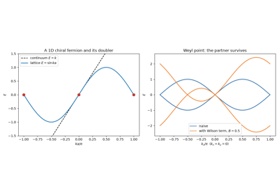
Fermion Doubling: the Nielsen-Ninomiya Theorem
1985 – Lopez Sancho Decimation and the Surface Green’s Function#
The local density of states of a surface, \(-\frac{1}{\pi}\mathrm{Im}\,G_{00}(E + i\eta)\), is the Green’s function of the outermost layer of a semi-infinite crystal. A finite slab approximates it with discrete levels and a second surface; adding layers one at a time, \(g = [E - h_0 - vgv^\dagger]^{-1}\), converges only as fast as \(\eta\) damps the waves coming back from the bulk, in about \(1/\eta\) steps. M. P. Lopez Sancho, J. M. Lopez Sancho and J. Rubio (1984, 1985) decimated instead: eliminating every other layer leaves a chain of the same form with renormalized couplings, so step \(n\) accounts for \(2^n\) layers and a few tens of steps reach the semi-infinite limit. Their scheme made surface Green’s functions routine: the surface states of photoemission, the edge and surface states of topological insulators, and the self-energies of the semi-infinite leads of quantum transport.
Implementation: tbkit.transport.surface_green() decimates any
chain of cells \((h_0, v)\); it gives the lead self-energies of
Transport.
tbkit.kspace.KSpace.surface_spectral_function() and
plot_surface_spectral_function() group the
cells of a periodic model into principal layers along any primitive
vector and decimate them at many \(\mathbf{k}_\parallel\) and
energies at once, for the surface (either side) or a bulk cell.
References: M. P. Lopez Sancho, J. M. Lopez Sancho, and J. Rubio, “Quick iterative scheme for the calculation of transfer matrices: application to Mo (100),” J. Phys. F 14, 1205-1215 (1984); M. P. Lopez Sancho, J. M. Lopez Sancho, and J. Rubio, “Highly convergent schemes for the calculation of bulk and surface Green functions,” J. Phys. F 15, 851-858 (1985).
Example: examples/tight_binding/plot_surface_greens_function.py
recovers the closed form \(g(E) = (E - i\sqrt{4t^2 - E^2})/2t^2\)
of the semi-infinite chain, needs 10 to 20 decimation steps where the
layer-by-layer recursion needs about \(18/\eta\) (at \(E =
0.7t\)), and finds the end
state of an SSH chain with weight \(1 - (t_1/t_2)^2\) on the
outermost cell, on both ends, and none when the chain ends on a strong
bond.
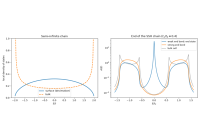
The Surface Green’s Function by Lopez Sancho Decimation
1996 – Zigzag Edge States of Graphene Ribbons#
M. Fujita, K. Wakabayashi, K. Nakada and K. Kusakabe (1996) found that the edges of a graphene ribbon decide its low-energy physics. Along a zigzag edge, a band of states sits at exactly \(E = 0\) over a third of the one-dimensional Brillouin zone, \(2\pi/3 \le |ka| \le \pi\): states on one sublattice only, whose amplitude falls by \(|2\cos(ka/2)|\) from one zigzag chain to the next, so that they are bound to the edge everywhere but at the projections of the Dirac points. Their flat band puts a peak in the density of states at the Fermi level, which makes the edges magnetic once electrons interact (see the Hubbard entry of Breakthroughs in Flat Bands and Interactions). K. Nakada, M. Fujita, G. Dresselhaus and M. S. Dresselhaus showed in the same year that armchair edges carry no edge states, and that an armchair ribbon of \(N\) dimer lines is metallic only for \(N = 3m + 2\). Ribbons became the standard test of edge physics in tight-binding models.
Implementation: tbkit.kspace.ribbon() cuts a ribbon out of any
2D KSpace model (a slab out of a 3D one),
periodic along one primitive vector and finite along the other; the
choice of primitive vectors sets the edge.
tbkit.graphene.GrapheneLattice cuts finite flakes with zigzag
or armchair edges in real space.
References: M. Fujita, K. Wakabayashi, K. Nakada, and K. Kusakabe, “Peculiar Localized State at Zigzag Graphite Edge,” J. Phys. Soc. Jpn. 65, 1920-1923 (1996); K. Nakada, M. Fujita, G. Dresselhaus, and M. S. Dresselhaus, “Edge state in graphene ribbons: Nanometer size effect and edge shape dependence,” Phys. Rev. B 54, 17954-17961 (1996).
Example: examples/tight_binding/plot_zigzag_edge_states.py finds
the zero-energy band of a 40-cell zigzag ribbon for
\(|ka| \ge 2\pi/3\), an edge state on one sublattice decaying by
\(|2\cos(0.4\pi)| = 0.618\) per chain at \(ka = 0.8\pi\), about
1/3 of a state per edge and per k-point at \(E = 0\), and armchair
ribbons that are metallic exactly for \(N = 3m + 2\).
1997/2008 – Maximally Localized Wannier Functions#
The Wannier functions of a band are defined only up to a gauge: a k-dependent unitary mixing of the Bloch states. N. Marzari and D. Vanderbilt fixed it by minimizing their spread, which gives maximally localized Wannier functions; I. Souza, N. Marzari and D. Vanderbilt extended the construction to entangled bands (2001). In this basis a first-principles Hamiltonian becomes an exact, short-ranged tight-binding model, \(H_{mn}(\mathbf{R}) = \langle m\mathbf{0}|H|n\mathbf{R}\rangle\), whose Fourier interpolation gives bands, Berry curvatures and transport at any k. The Wannier90 code (2008) made these models a routine output of density-functional calculations, and brought tight-binding back to materials-specific accuracy.
Implementation: tbkit.wannier.wannierize() builds the maximally
localized Wannier functions of an isolated band group of any
KSpace model: projection onto trial orbitals,
Lowdin orthogonalization, then conjugate-gradient minimization of the
Marzari-Vanderbilt spread. It returns the functions on the sites of a
finite System, their centres, their spreads and
\(\Omega_I, \tilde\Omega_D, \tilde\Omega_{OD}\) (entangled bands
are disentangled first, see the 2001 entry). tbkit.io.read_wannier90()
reads seedname_hr.dat (with the degeneracy weights of the
Wigner-Seitz supercell), the lattice vectors of seedname.win and the
Wannier centres of seedname_centres.xyz into a
KSpace; read_hr(),
read_win_cell() and read_centres() read
the files themselves.
References: N. Marzari and D. Vanderbilt, “Maximally localized generalized Wannier functions for composite energy bands,” Phys. Rev. B 56, 12847-12865 (1997); I. Souza, N. Marzari, and D. Vanderbilt, Phys. Rev. B 65, 035109 (2001); A. A. Mostofi et al., “wannier90: A tool for obtaining maximally-localised Wannier functions,” Comput. Phys. Commun. 178, 685-699 (2008); N. Marzari et al., Rev. Mod. Phys. 84, 1419 (2012).
Examples: examples/models/plot_building_maximally_localized_wannier_functions.py
builds them for the SSH chain, where the minimization reaches the bound
\(\Omega = \Omega_I\) with the centre on the Wilson-loop value 0.75,
and for gapped graphene, whose Wannier function sits on a b site with
\(\langle 0|H|0\rangle\) equal to the band’s mean energy.
examples/models/plot_maximally_localized_wannier_functions.py
imports graphene’s \(p_z\) bands from Wannier90-format files shipped
with it, checks the degeneracy weights and the decay of the hoppings, and
recovers the closed-form energies at \(\Gamma\) and at the Dirac point.
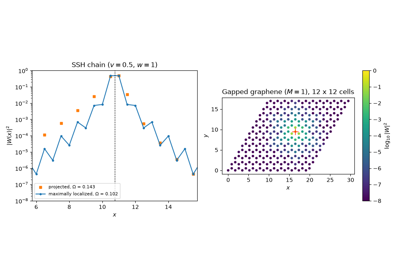
Maximally Localized Wannier Functions: Projection and Spread Minimization
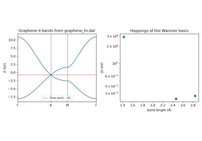
Maximally Localized Wannier Functions: Graphene from a Wannier90 File
2001 – Disentanglement of Entangled Bands#
Maximally localized Wannier functions need a group of bands separated from the rest of the spectrum, and the bands of interest rarely are: graphene’s π bands cross its σ bands, and the d bands of transition metals are entangled with s bands. I. Souza, N. Marzari and D. Vanderbilt split the construction in two. First, at each k, choose the \(n_W\)-dimensional subspace of the states in an outer energy window that changes least from k to k: the one that minimizes the gauge-invariant spread \(\Omega_I\), a variational problem solved by iterating an eigenvalue problem at each k. States in an inner, frozen window are kept unchanged, so the Wannier functions reproduce the bands there exactly. Then localize within that subspace as for an isolated group. Disentanglement is what made Wannier functions usable for metals and for the low-energy bands of real materials, and it is the first step of nearly every Wannier90 calculation. The Hamiltonian in the resulting basis interpolates the bands between the mesh points (Wannier interpolation).
Implementation: tbkit.wannier.wannierize() disentangles when it
gets more bands than trial orbitals, or an outer window, with an
optional frozen window: the subspace iteration with linear mixing
(dis_history records \(\Omega_I\) at each step), then the
spread minimization within it.
kspace() returns the Wannier-basis
Hamiltonian \(H_{mn}(\mathbf{R})\) as a
KSpace (Wigner-Seitz images, as in Wannier90), the
model tbkit.io.read_wannier90() would read.
References: I. Souza, N. Marzari, and D. Vanderbilt, “Maximally localized Wannier functions for entangled energy bands,” Phys. Rev. B 65, 035109 (2001); J. R. Yates, X. Wang, D. Vanderbilt, and I. Souza, “Spectral and Fermi surface properties from Wannier interpolation,” Phys. Rev. B 75, 195121 (2007).
Example: examples/models/plot_disentangling_entangled_bands.py
takes the eight sp3 bands of graphene, where the π band starts
6 eV below the top of the σ bands. In flat graphene the disentangled
subspace is exactly the \(p_z\) one (\(\Omega_I = 0\)), and the
Wannier model is Wallace’s, with the single hopping \(V_{pp\pi}\).
In buckled graphene the π and σ states mix: \(\Omega_I\) decreases at
every step, the frozen bands are reproduced on the mesh to
\(10^{-14}\), and the error between mesh points falls from 0.23 eV to
0.04 eV as the mesh goes from 6 x 6 to 12 x 12.
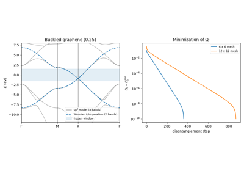
Disentanglement: Wannier Functions of the π Bands of Graphene
2004 – Isolation of Graphene#
A. Geim, K. Novoselov, and coworkers mechanically exfoliated a single atomic layer of carbon from graphite, producing the first genuinely 2D crystal. Graphene’s low-energy quasiparticles obey a massless relativistic (Dirac) equation rather than the usual Schrodinger equation: expanding the honeycomb-lattice \(H(\mathbf{k})\) near either inequivalent Brillouin-zone corner \(K\), \(K'\) gives a linear dispersion, \(E(\mathbf{k}) = \pm\hbar v_F|\mathbf{k}|\), with the two bands touching at exactly zero energy – turning a tabletop condensed matter experiment into a laboratory for relativistic quantum phenomena, and putting the honeycomb lattice, and Haldane’s sixteen-year old model built on it, at the center of the field. Geim and Novoselov shared the 2010 Nobel Prize in Physics for this work.
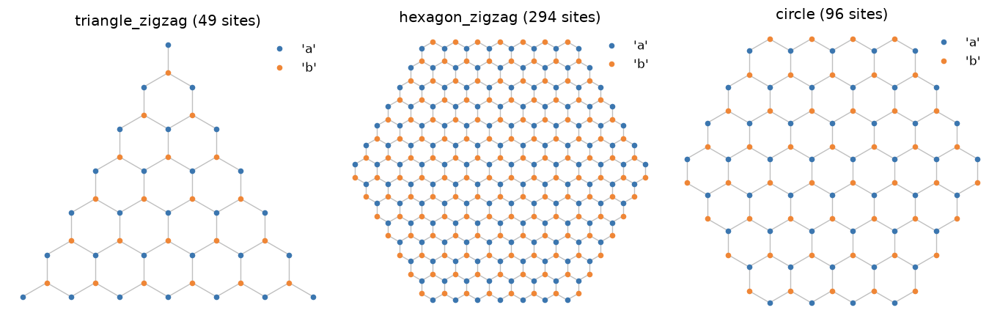
Implementation: tbkit.lattices.honeycomb(), or the equivalent
hand-built unit cell used throughout this package’s graphene examples;
tbkit.graphene.GrapheneLattice additionally provides ready-made
finite flakes of several shapes and terminations (triangular/hexagonal,
zigzag/armchair).
Example: examples/tight_binding/plot_isolation_of_graphene.py
confirms the Berry phase \(\pi\) around both Dirac points, with
opposite pseudospin windings, the \(||A|-|B||\) zero modes of
zigzag triangles, and the different scaling of the lowest levels of
zigzag and armchair hexagons.
References: K. S. Novoselov, A. K. Geim, S. V. Morozov, D. Jiang, Y. Zhang, S. V. Dubonos, I. V. Grigorieva, and A. A. Firsov, “Electric Field Effect in Atomically Thin Carbon Films,” Science 306, 666-669 (2004).
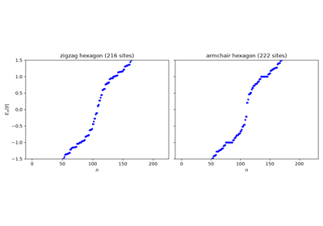
The Isolation of Graphene: Flakes, Edges, and a Berry Phase of pi
2006 – The Kernel Polynomial Method#
Weisse, Wellein, Alvermann and Fehske turned the Chebyshev expansions of Silver and Roder (1994) into the standard way of computing spectral properties of very large sparse Hamiltonians without diagonalizing them: expand \(\delta(E - H)\) in Chebyshev polynomials of the rescaled Hamiltonian, compute each moment with one sparse matrix-vector product, estimate traces with a few random vectors, and damp the truncation’s Gibbs oscillations with a kernel. The cost grows linearly with the number of sites – millions of them, for densities of states, local densities of states, and Kubo conductivities.
Implementation: tbkit.kpm (dos(),
ldos(), conductivity(), with the Jackson
and Lorentz kernels).
References: A. Weisse, G. Wellein, A. Alvermann, and H. Fehske, “The Kernel Polynomial Method,” Rev. Mod. Phys. 78, 275-306 (2006); R. N. Silver and H. Roder, Int. J. Mod. Phys. C 5, 735 (1994).
Example: examples/large_scale/plot_kernel_polynomial_method.py
computes the density of states of a 45,000-site graphene sheet, confirms
it against the Brillouin-zone result to within 3% and against the Dirac
law near \(E = 0\), finds the van Hove peak at \(|t|\), and the
zero-energy states bound by 2% of vacancies.
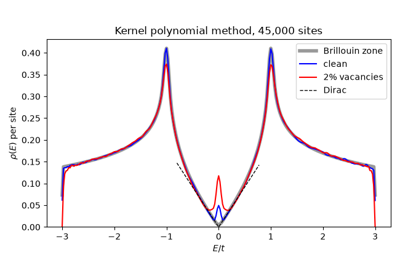
The Kernel Polynomial Method: Graphene With Vacancies, 45,000 Sites
2010 – Band Unfolding: Effective Band Structures of Supercells#
Alloys, dopants, vacancies and disorder break the translation symmetry, and a calculation in a supercell folds the bands into a Brillouin zone \(N\) times smaller, burying the band structure that photoemission actually measures. W. Ku, T. Berlijn and C.-C. Lee, and independently V. Popescu and A. Zunger, unfolded it: the weight of each supercell state \(|\mathbf{K}J\rangle\) on the primitive Bloch states at every \(\mathbf{k}\) folding onto \(\mathbf{K}\) gives an effective spectral function \(A(\mathbf{k},\omega) = \sum_J W_J(\mathbf{k}) \delta(\omega - E_J)\) in the primitive zone: sharp bands where the crystal is ordered, broadened ones where disorder scatters the electrons.
Implementation: tbkit.moire.supercell() (any integer supercell
matrix, spinful models and overlaps included),
tbkit.moire.unfold() and tbkit.moire.spectral_function().
References: W. Ku, T. Berlijn, and C.-C. Lee, “Unfolding First-Principles Band Structures,” Phys. Rev. Lett. 104, 216401 (2010); V. Popescu and A. Zunger, “Extracting E versus k effective band structure from supercell calculations on alloys and impurities,” Phys. Rev. B 85, 085201 (2012).
Example: examples/moire/plot_band_unfolding.py confirms that a
pristine \(3\times3\) graphene supercell unfolds exactly onto the two
graphene bands, the coherence factors \((1\pm\epsilon_k/E_k)/2\) of a
staggered chain, the sum rule \(\int A\,d\omega = 2\), and a peak
width that grows with the Anderson disorder of a \(6\times6\)
supercell.
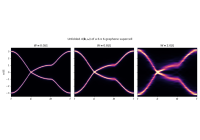
Band Unfolding: the Effective Band Structure of a Disordered Supercell